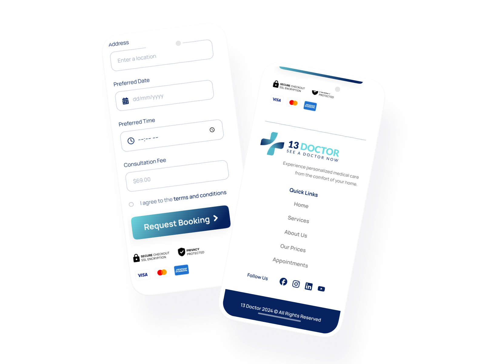
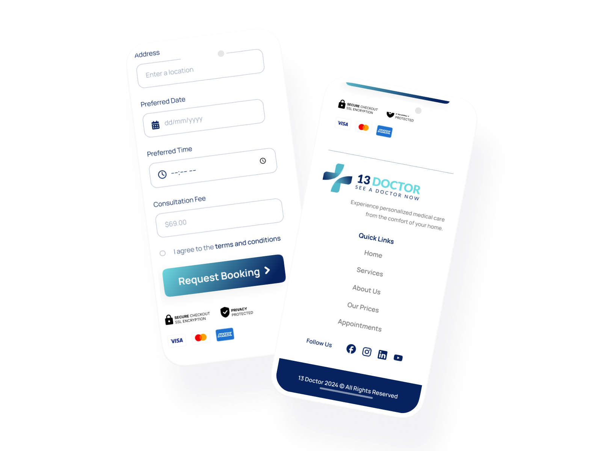
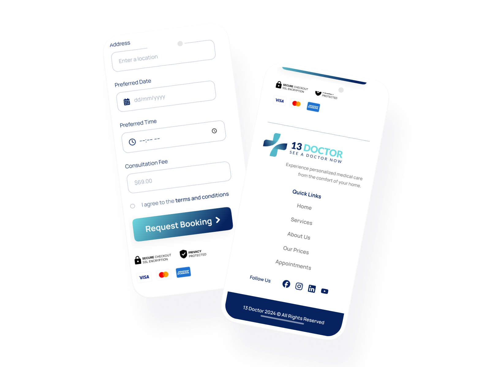

Project Summary
As the UX/UI Designer for the 13 Doctor telehealth service, I was responsible for creating a user-centered design that enhances the accessibility of healthcare. The platform features a modern, professional aesthetic with calming colors and clean typography, ensuring a seamless user experience across all devices. I focused on intuitive navigation, mobile-first design, and clear calls-to-action, enabling users to easily book online consultations. Additionally, I ensured the content strategy aligned with the service's goals, integrating patient testimonials and adhering to WCAG 2.1 AA accessibility standards for inclusivity.
